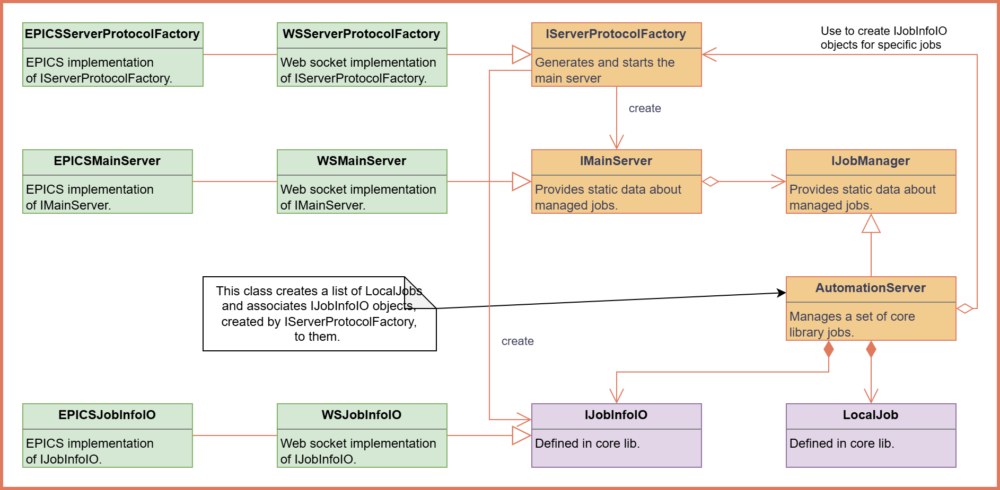
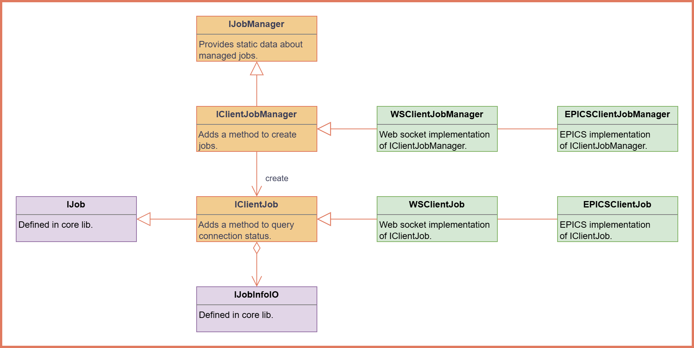

Introduction
The oac-tree-server is a framework designed to serve and manage oac-tree procedures. It acts as a backend for executing, monitoring, and controlling oac-tree jobs, providing a robust infrastructure for automation and operational efficiency.
Key Features of oac-tree-server
Serving oac-tree Procedures:
The server is responsible for hosting and executing oac-tree procedures.
Procedures are encapsulated as jobs, each with its own workspace, instruction trees, and execution flow.
Job Management:
Each procedure is treated as a job, with a unique identifier and associated resources.
The server manages multiple jobs simultaneously, ensuring efficient resource utilization.
Information Servers:
The oac-tree-server provides information servers that allow remote clients to query details about the jobs being served.
Information includes:
Job metadata (e.g., name, number of instructions, variables).
Current job state (e.g., running, paused, halted).
Instruction statuses and variable values.
Control Servers:
In addition to information servers, the oac-tree-server provides control servers for interacting with jobs.
Clients can:
Start, pause, reset, or halt jobs.
Set or remove breakpoints on specific instructions.
Network Transport:
The server supports two network transports:
WebSocket (primary): a JSON-based protocol that exposes per-job state streams and a single control/info endpoint. See WebSocket API for the full wire-format specification.
EPICS: publishes job state, instruction statuses, and variable values as EPICS PVs (Process Variables), and exposes control and info over EPICS RPC.
Architecture of oac-tree-server
Job Execution:
Each job is executed based on its oac-tree procedure definition.
The server ensures deterministic execution and provides feedback on the job’s progress.
Information Flow:
The server uses information servers to expose job-related data.
Clients can subscribe to updates or query specific details.
Control Flow:
Control servers handle commands from clients to manage job execution.
Commands include starting, pausing, or resetting jobs, as well as modifying breakpoints.
Input Handling:
The server supports user input requests during job execution.
Input requests are published via dedicated input servers, and clients can respond with the required data.
Server-side architecture
The following diagram shows the main server-side components and their relationships.

The AutomationServer (implementing IJobManager) owns one LocalJob per hosted procedure. Each job is coupled to a transport-specific IJobInfoIO that forwards execution events — instruction/variable state changes, log and output messages, and user-input requests — to the network layer. The IServerProtocolFactory abstracts the transport choice (WebSocket or EPICS) and is responsible for creating both the per-job IJobInfoIO objects and the IMainServer that exposes the control and info interface to remote clients.
Client-side architecture
The following diagram shows the main client-side components and their relationships.

The AutomationClientStack (implementing IJobManager) provides a symmetric API to the server side. It wraps info and control RPC protocol clients and reconstructs live job state from the stream of update messages received over the network. The same IJobManager interface is therefore usable on both server and client, allowing higher-level code to remain transport-agnostic.
Benefits of oac-tree-server
Centralized management of oac-tree procedures.
Enabling multiple clients to monitor a single job execution.
Real-time access to job information and statuses.
Modular and extensible architecture for serving multiple jobs.
The oac-tree-server is designed to be the backbone of distributed oac-tree deployments, where procedures run on a central server and one or more clients observe and control them remotely.